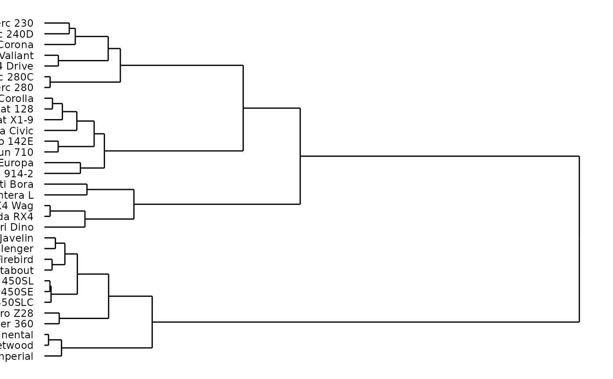
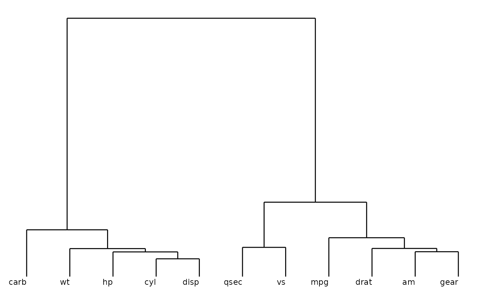
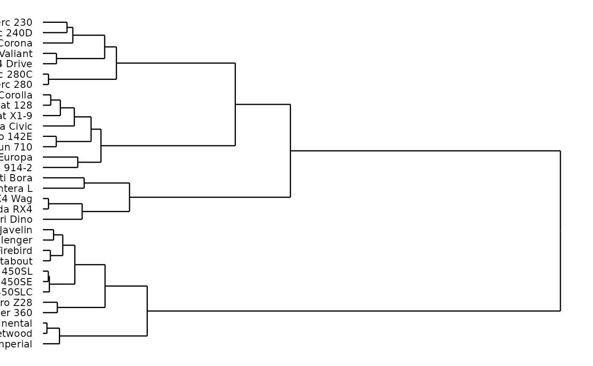
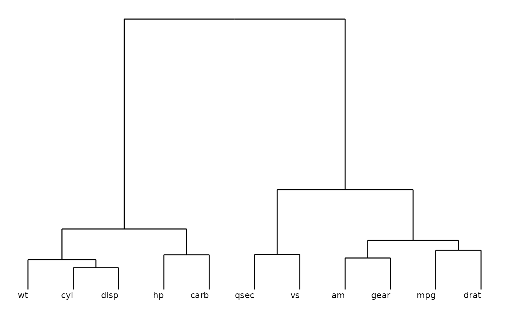
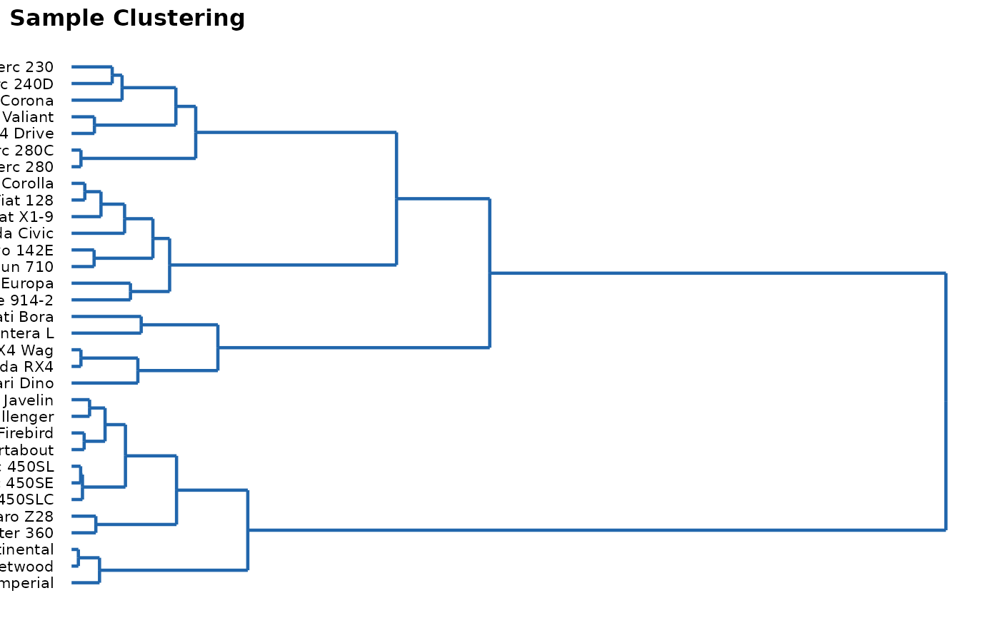

Plot a Hierarchical Clustering Dendrogram
plot_dend.RdProduces a publication-ready dendrogram from a data frame, tibble, or matrix using hierarchical clustering. Supports row-wise and column-wise clustering with configurable distance metrics and agglomeration methods. Returns a ggplot2 object via ggdendro.
Usage
plot_dend(
x,
clustering_distance_rows = "euclidean",
clustering_distance_cols = "euclidean",
agglomeration_method = "ward.D",
orientation = "rows",
theme = "nature",
title = NULL,
subtitle = NULL,
global_font_size = 11,
axis_title_size = NULL,
axis_text_size = NULL,
legend_title_size = NULL,
legend_text_size = NULL,
plot_title_size = NULL,
plot_subtitle_size = NULL,
label_size = NULL,
line_width = 0.5,
line_color = "black",
...
)Arguments
- x
A data frame, tibble, or matrix of numeric values to cluster. Column names may contain special characters.
- clustering_distance_rows
A single character string specifying the distance metric for row clustering. One of
"euclidean"(default),"maximum","manhattan","canberra","binary", or"minkowski". Seedist.- clustering_distance_cols
A single character string specifying the distance metric for column clustering. Same options as
clustering_distance_rows. Default"euclidean".- agglomeration_method
A single character string specifying the agglomeration method passed to
hclust. One of"ward.D"(default),"ward.D2","single","complete","average","mcquitty","median", or"centroid".- orientation
A single character string. One of
"rows"(default; clusters rows),"cols"(clusters columns), or"both"(returns a named list of twoggplot2objects).- theme
A single character string specifying the plot theme. One of
"nature"(default),"classic","minimal", or"bw".- title
A single character string for the plot title. Default
NULL(no title).- subtitle
A single character string for the plot subtitle. Default
NULL(no subtitle).- global_font_size
A single positive numeric specifying the base font size in points. Default
11.- axis_title_size
A single positive numeric for axis title font size. Defaults to
global_font_size.- axis_text_size
A single positive numeric for axis text font size. Defaults to
global_font_size.- legend_title_size
A single positive numeric for legend title font size. Defaults to
global_font_size.- legend_text_size
A single positive numeric for legend text font size. Defaults to
global_font_size.- plot_title_size
A single positive numeric for plot title font size. Defaults to
global_font_size + 2.- plot_subtitle_size
A single positive numeric for plot subtitle font size. Defaults to
global_font_size.- label_size
A single positive numeric controlling the font size of leaf labels. Defaults to
global_font_size * 0.8.- line_width
A single positive numeric for dendrogram branch width. Default
0.5.- line_color
A single character string for branch colour. Default
"black".- ...
Value
A ggplot2 object, or a named list of two ggplot2
objects (rows and cols) when orientation = "both".
Details
Numeric columns are extracted and scaled (zero mean, unit variance) before
computing distances. Rows or columns containing all NA values are
silently dropped. Remaining NAs are imputed with column means before
scaling.
When orientation = "both", the returned object is a named list with
elements rows and cols.
Examples
## Row dendrogram (default)
plot_dend(mtcars)

## Column dendrogram with Manhattan distance
plot_dend(mtcars, orientation = "cols",
clustering_distance_cols = "manhattan")

## Both axes
dends <- plot_dend(mtcars, orientation = "both")
dends$rows

dends$cols

## Custom styling
plot_dend(mtcars, theme = "minimal", line_color = "#2166AC",
line_width = 0.8, global_font_size = 10,
title = "Sample Clustering")
